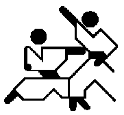
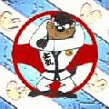

Links
LINKS naar andere karate-sites die een bezoekje waard zijn:
Gerelateerd aan 'onze'
eigen vereniging (KLM
Karateclub Amstelveen):
|
||
Andere Genseiryu sites:
|
||
| Evenementen: | ||
 |
Andere Karate sites (geen Genseiryu):
|
|
| |
Karate-startpagina's: |
|
|
 |
Andere sites die NIKS (of niet direct iets) met KARATE te maken hebben:

|
|